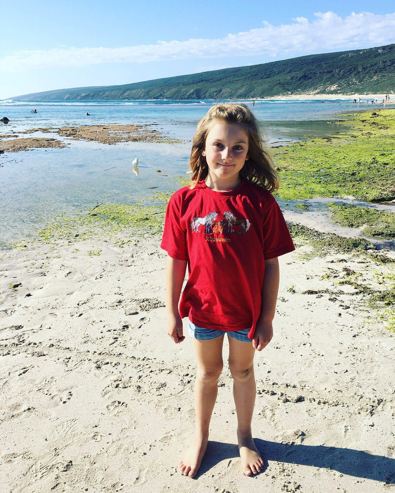

Olivia
Australia AutismMy name is Olivia, I rock neurodiversity everyday. I was born with hip dysplasia, autism and adhd. Despite the challenges these conditions bring me my family and I always like to focus on all the amazing skills and talents neurodiversity brings me.
We celebrate the achievements no matter how small they may seem to others. I love architecture, drawing and especially animals. I need lots of support to thrive in a world not built for me so what I really want is not just awareness of disability but your acceptance.
I might be different but I have so much to share, my view of the world is totally unique!!
Get involved Back to all stories